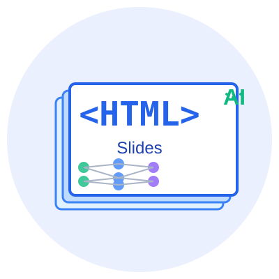

现代化、灵活、可编程的演示方案
AI Generated Presentation
通过CSS实现任意样式
适配所有设备屏幕
纯文本格式，版本控制友好
无需专用软件，浏览器即可
避免操作PowerPoint等复杂软件
无需付费工具，任何模型均可接入
大模型HTML代码生成质量高
AI直接生成代码，即时预览
图1: HTML演示文稿可轻松嵌入各类媒体资源（SVG矢量图）
在 <section class="slide"> 上添加以下 data 属性即可控制布局：
| 属性 | 可选值 | 说明 |
|---|---|---|
data-direction | column | row | 排列方向：从上到下 / 从左到右 |
data-justify | start | center | end | between | around | 主轴对齐方式 |
data-align | start | center | end | stretch | 交叉轴对齐方式 |
<section class="slide" data-direction="row" data-justify="between" data-align="center">
data-direction="row"内容靠左排列
内容居中排列
内容靠右排列
以上三个盒子使用 flex row + space-between 横向排列
开始使用HTML创建你的下一个演示文稿！